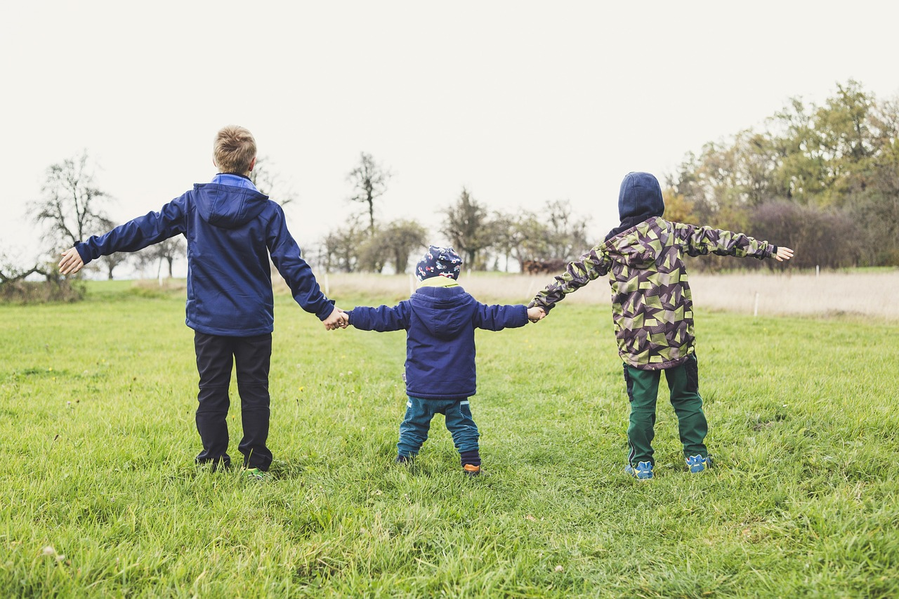
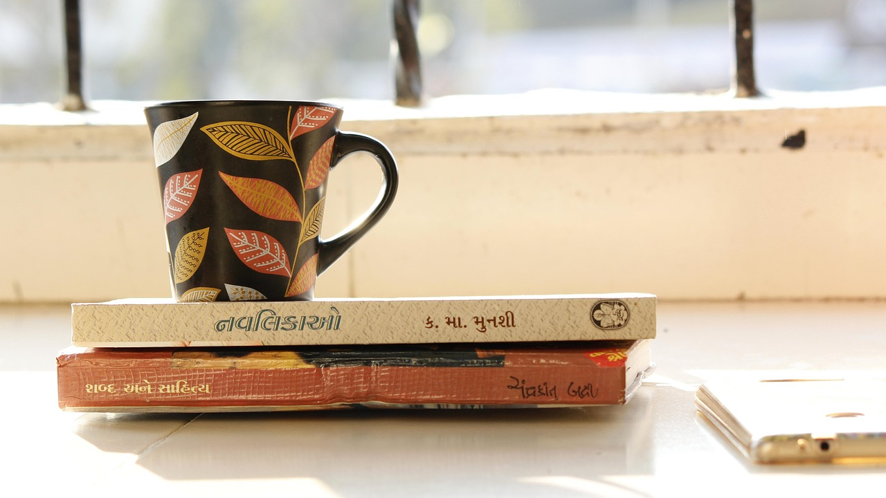
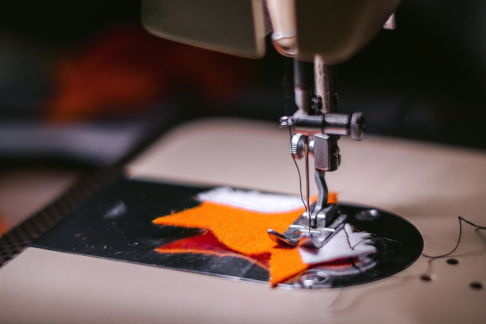
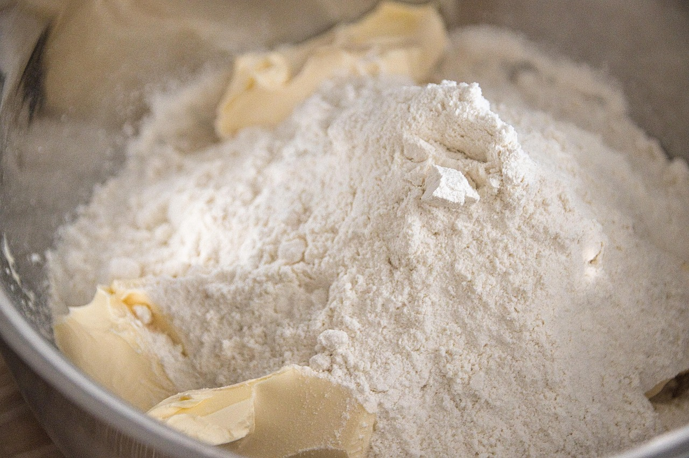

📣
마케팅
사람의 마음이 움직이는 지점을 찾아 브랜드와 이야기를 연결합니다.
일상을 해석하고, 경험을 자산으로.

안녕하세요, 왕미진입니다. 네 아이를 키우는 엄마이자, 마케터이자, 블로그와 콘텐츠를 만드는 크리에이터예요.
책을 읽고, 여행을 떠나고, 미싱 앞에 앉아 무언가를 만들고, 가족을 위해 맛있는 음식을 차리는 — 그런 평범한 일상이 저에게는 가장 큰 재료입니다.
비슷한 라이프스타일과 취향을 가진 분들과 이야기를 나누며, 각자의 일상이 수익과 기회로 이어지는 길을 함께 찾고 있어요.
일상과 일을 분리하지 않습니다. 삶에서 얻은 경험이 곧 콘텐츠가 되고, 콘텐츠는 다시 누군가에게 닿는 가치가 됩니다.
사람의 마음이 움직이는 지점을 찾아 브랜드와 이야기를 연결합니다.
꾸준한 기록으로 신뢰를 쌓고, 검색되고 공유되는 글을 만듭니다.
살림·육아·취미·요리 — 일상의 장면을 공감 가는 콘텐츠로 담아냅니다.
나만의 경험을 해석하고, 수익으로 이어지는 방향을 함께 설계합니다.
누구나 이미 충분한 재료를 가지고 있어요. 필요한 건 그것을 바라보는 시선과 방향입니다.
육아, 살림, 취미, 일 — 매일 쌓이는 나만의 이야기
그 경험이 누구에게, 왜 가치 있는지 발견하기
글·사진·영상으로 정리해 세상과 나누기
신뢰와 영향력, 그리고 수익으로 연결하기
네 아이를 키우며 일하는 엄마에게 시간은 가장 귀한 자원이에요. 그래서 AI 자동화를 공부하고 있습니다. 반복되는 일은 AI에게 맡기고, 사람만이 할 수 있는 이야기와 연결에 더 집중하려고요.
좋아하는 일을 오래 하다 보면, 그 안에서 나만의 이야기가 생겨요.

생각을 넓혀 주는 가장 조용한 시간
낯선 곳에서 얻는 새로운 시선

한 땀 한 땀, 손으로 만드는 즐거움

맛있는 음식으로 전하는 사랑